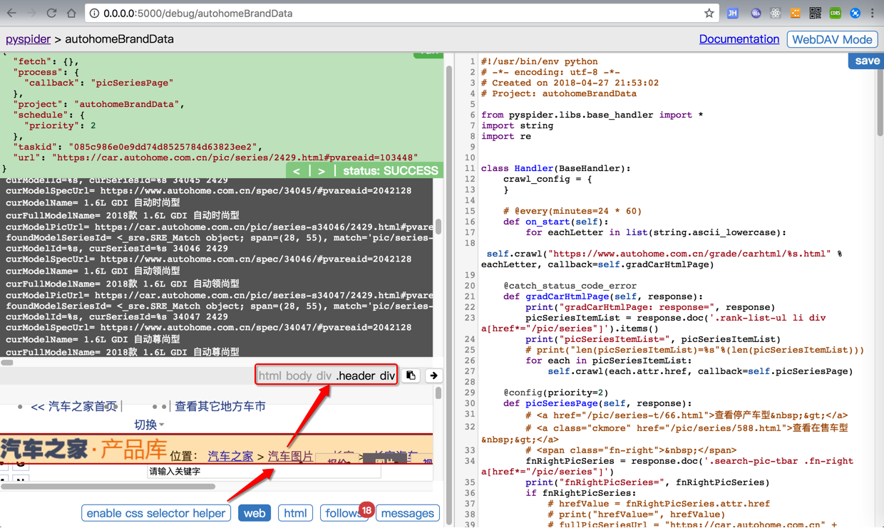
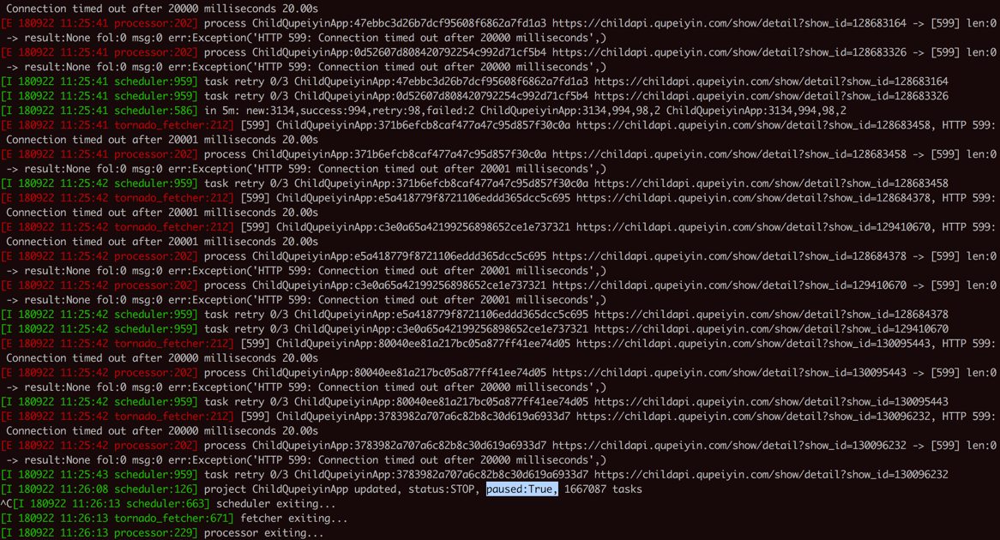
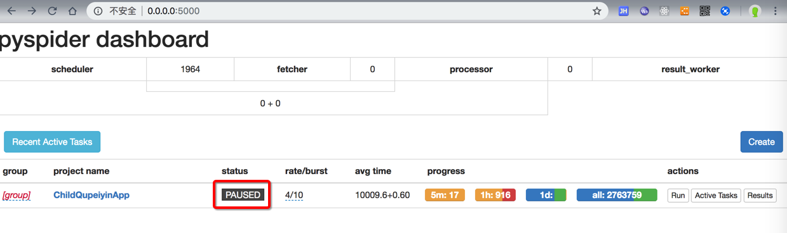

PySpider的心得
对于加载更多内容，除了想办法找js或api，也可以换个其他的思路
问题：想要获取单个页面的更多的内容，一般页面都是向下滚动，加载更多。内部往往是js实现，调用额外的api获取更多数据，加载更多数据。
思路：所以一般往往会去研究和抓包，搞清楚调用的api。但是其实有思路多去看看网页中与之相关的其他内容，往往可以通过其他途径，比如另外有个单独的页面，可以获取我所需要的所有的车型车系的数据。就可以避免非要去研究和抓包api了。
详见：【已解决】pyspider中如何加载汽车之家页面中的更多内容
调试界面中的enable css selector helper
点击web后可以看到html页面内容
再点击enable css selector helper后
之后点击某个页面元素，则可以直接显示出对应的css的selector

不过话说我个人调试页面期间，很少用到。
都是直接去Chrome浏览器中调试页面，查看html源码，寻找合适的css selector。
发送POST请求且传递格式为application/x-www-form-urlencoded的form data参数
代码：
@config(age=10 * 24 * 60 * 60)
def index_page(self, response):
# <ul class="list-user list-user-1" id="list-user-1">
for each in response.doc('ul[id^="list-user"] li a[href^="http"]').items():
self.crawl(each.attr.href, callback=self.detail_page)
maxPageNum = 10
for curPageIdx in range(maxPageNum):
curPageNum = curPageIdx + 1
print("curPageNum=%s" % curPageNum)
getShowsUrl = "http://xxx/index.php?m=home&c=match_new&a=get_shows"
headerDict = {
"Content-Type": "application/x-www-form-urlencoded"
}
dataDict = {
"counter": curPageNum,
"order": 1,
"match_type": 2,
"match_name": "",
"act_id": 3
}
self.crawl(
getShowsUrl,
method="POST",
headers=headerDict,
data=dataDict,
cookies=response.cookies,
callback=self.parseGetShowsCallback
)
def parseGetShowsCallback(self, response):
print("parseGetShowsCallback: self=%s, response=%s"%(self, response))
respJson = response.json
print("respJson=%s" % (respJson))
实现了：
- 发送
POST- 传递header
"Content-Type": "application/x-www-form-urlencoded"
- 传递
data- 一个
dict，包含对应的key和value
- 一个
- 顺带传递了
cookiecookies=response.cookies
- 获得返回的
JSONcallback中用response.json
- 传递header
无法继续爬取时，注意是否是重复url导致的
当发现没有继续爬取后续数据时，记得想想是不是重复url导致的。
比如此处的：
POST /selfReadingBookQuery2
{ "offset": 0, "limit":10}
和：
POST /selfReadingBookQuery2
{ "offset": 10, "limit":10}
虽然（json参数）变化了，但是url没变
-> 导致不（重复）爬取
解决办法：让每次的url不同
实现方式：比如给url后面加上#hash值
举例说明
timestampStr = datetime.now().strftime("%Y%m%d_%H%M%S_%f")
curUrlWithHash = curUrl + "#" + timestampStr
self.crawl(curUrlWithHash,
...
的：
/selfReadingBookQuery2#20190409_162018_413205
/selfReadingBookQuery2#20190409_162117_711811
即可实现，每次请求url都不同，就可以继续爬取了。
如果还是不行，或者说，为了更加保险，可以再去加上itag，比如：
# add hash value for url to force re-crawl when POST url not changed
timestampStr = datetime.now().strftime("%Y%m%d_%H%M%S_%f")
curUrlWithHash = curUrl + "#" + timestampStr
fakeItagForceRecrawl = "%s_%s_%s" % (timestampStr, offset, limit)
self.crawl(curUrlWithHash,
itag=fakeItagForceRecrawl, # To force re-crawl for next page
method="POST",
当连续多个请求都出现599超时连接后，且尝试retry也都全部失败后，会自动暂停
之前遇到过多次，类似这种：

[I 180922 11:25:42 scheduler:959] task retry 0/3 ChildQupeiyinApp:c3e0a65a42199256898652ce1e737321 https://childapi.qupeiyin.com/show/detail?show_id=129410670
[E 180922 11:25:42 tornado_fetcher:212] [599] ChildQupeiyinApp:80040ee81a217bc05a877ff41ee74d05 https://childapi.qupeiyin.com/show/detail?show_id=130095443, HTTP 599: Connection timed out after 20000 milliseconds 20.00s
[E 180922 11:25:42 processor:202] process ChildQupeiyinApp:80040ee81a217bc05a877ff41ee74d05 https://childapi.qupeiyin.com/show/detail?show_id=130095443 -> [599] len:0 -> result:None fol:0 msg:0 err:Exception('HTTP 599: Connection timed out after 20000 milliseconds',)
[I 180922 11:25:42 scheduler:959] task retry 0/3 ChildQupeiyinApp:80040ee81a217bc05a877ff41ee74d05 https://childapi.qupeiyin.com/show/detail?show_id=130095443
[E 180922 11:25:42 tornado_fetcher:212] [599] ChildQupeiyinApp:3783982a707a6c82b8c30d619a6933d7 https://childapi.qupeiyin.com/show/detail?show_id=130096232, HTTP 599: Connection timed out after 20000 milliseconds 20.00s
[E 180922 11:25:42 processor:202] process ChildQupeiyinApp:3783982a707a6c82b8c30d619a6933d7 https://childapi.qupeiyin.com/show/detail?show_id=130096232 -> [599] len:0 -> result:None fol:0 msg:0 err:Exception('HTTP 599: Connection timed out after 20000 milliseconds',)
[I 180922 11:25:43 scheduler:959] task retry 0/3 ChildQupeiyinApp:3783982a707a6c82b8c30d619a6933d7 https://childapi.qupeiyin.com/show/detail?show_id=130096232
[I 180922 11:26:08 scheduler:126] project ChildQupeiyinApp updated, status:STOP, paused:True, 1667087 tasks
^C[I 180922 11:26:13 scheduler:663] scheduler exiting...
[I 180922 11:26:13 tornado_fetcher:671] fetcher exiting...
[I 180922 11:26:13 processor:229] processor exiting...
[I 180922 11:26:13 result_worker:66] result_worker exiting...
上述 status:STOP, paused:True 就是表示暂停了。
对应着界面上status自动变成PAUSED

-> 估计是内部逻辑发现多次是599的错误，就自动暂停重试了。避免了后续无效的请求
-> 还是很智能的，因为此处实际上是网络断了，导致无法请求的。